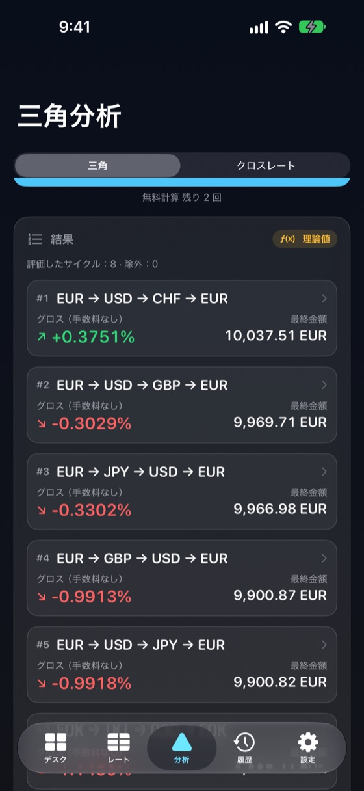
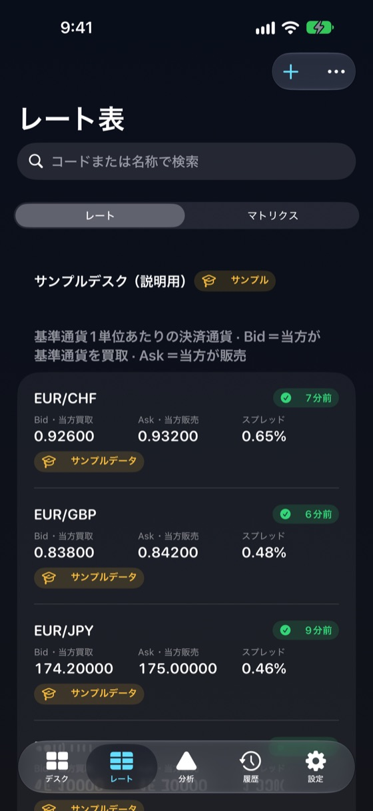
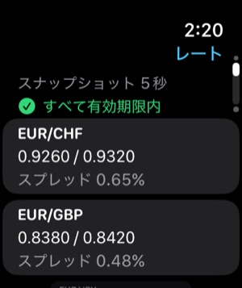

オフライン対応
レート表、履歴、計算はすべて端末内。機内モードでも起動・計算できます。
両替窓口・キャッシャー・為替トレーダーのために
FXDeskはボードのBid/Askをレート表、クロスレート、順位付きの A → B → C → A 換算経路に変換し、スプレッド・手数料・時刻をすべて表示します。
iPhone上で完結し、インターネットなしで動作。理論値を利益保証のように見せることはありません。

すべての数値に、出所・経過時間・使用したレートの側が表示されます。
レート表、履歴、計算はすべて端末内。機内モードでも起動・計算できます。
表で成立するすべての A → B → C → A サイクルを両方向で評価し、推定ネット結果で順位付けします。
使用中デスクのスナップショット、レートの経過時間、最後の結果をApple Watchで読み取り専用表示。
大きな数字のデスクモード、等幅数字、検索優先の通貨選択。
ペアごとにBidとAskを入力。表はすべての方向の換算を示し、レートがない箇所は「—」になります。
基準通貨を売るときはBid、買うときは1÷Ask。逆ペアは両側を正しく入れ替えます。仲値の掛け合わせで見かけの利益を作ることはありません。
直接レートと第3通貨経由の合成クロスレートを、両方のスプレッドとクロス検出込みで比較。
ステップごとの手数料と固定手数料を入力。グロスと推定ネットをステップごとに並べて表示。
窓口や支店ごとに別のレート表。複製、名前変更、書き出し、読み込み — レートが混ざることはありません。
各計算は、使用したレート、時刻、端数処理、手数料とともに保存されます。
アカウント不要、分析・トラッキングなし。書き出さない限りレートは端末内に残ります。
3回まで無料、その後は1回のアプリ内購入。サブスクリプションではありません。
ボードの買取（Bid）・販売（Ask）レートを入力、またはサンプルデスクから開始。
開始通貨と金額、または特定の3通貨サイクルを選びます。
各ステップに正しいレート側を適用し、成立するサイクルを順位付けします。
スプレッド、手数料、現金端数、レートの鮮度、各結果の前提を確認します。
参考レートや基準レートは約定可能な価格ではありません。FXDeskは入力されたレートで計算するため、窓口がそのレートに応じるか、紙幣の在庫や上限があるかは分かりません。
スプレッド、手数料、紙幣単位への端数処理、ステップ間の時間差により、小さな理論上の差は通常消えます。そのためFXDeskはグロスと推定ネットを分けて表示し、古いレート・仲値のみ・サンプルのデータは理論値と表示します。
FXDeskは計算ツールです。取引や両替を実行せず、金融助言も行わず、利益を保証しません。
レート、プロファイル、履歴、計算はすべてiPhoneに保存され、接続なしで動作します。各レートは記録時刻と出所を保持し、期限を過ぎたレートは警告表示され、黙って最新扱いされることはありません。


Watchアプリは使用中デスクの読み取り専用スナップショット（レートとスプレッド、経過時間、古いレート数、最後の計算）を表示します。iPhoneが離れていても最後のスナップショットを保持します。
無料
$29.99
1回限りのアプリ内購入（米国価格。各国の価格はApp Storeが設定します）。
三角計算またはクロスレート計算の結果が正常に表示されたときです。無効な入力、エラー、レートの閲覧や編集、履歴の再表示は数えず、同じ計算を二重に数えることもありません。
はい。レート、プロファイル、履歴、計算はすべてiPhone上にあります。接続が必要なのは任意のECB参照レートとApp Storeでの購入のみです。
いいえ。入力したレートで計算します。任意のECB参照レートは営業日ごとに1回公表される参考情報で、計算には使いません。
3つのレートで A → B → C → A と換算することです。スプレッド後の最終金額が開始金額を上回ると、理論上の差が表示されます。
いいえ。結果はレート次第です。在庫、紙幣、上限、手数料、タイミングで消えることがあります。FXDeskは結果を参考値または理論値と表示し、約定可能とは表示しません。
売るときは低いBid、買うときは高いAskが適用されます。各ステップでスプレッドを支払うため、多くのサイクルは開始金額をわずかに下回ります。
完了した計算3回です。エラーや無効な入力は数えません。
いいえ。復元可能な1回限りの非消耗型アプリ内購入です。
読み取り専用のスナップショット：レートとスプレッド、経過時間、古いレート数、最後の計算です。
いいえ。注文、両替、銀行・ブローカーへの接続は一切行いません。
デスクプロファイルとレート、計算履歴、設定、無料計算の回数です。アップロードはなく、アカウントもありません。